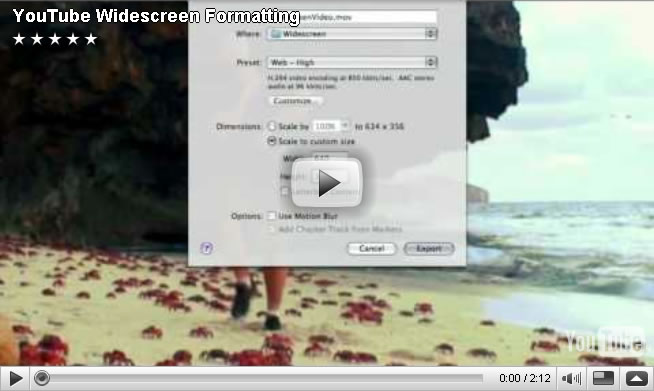

Images have an intrinsic width and an intrinsic height from which we can determine an intrinsic ratio. Width and height may be scaled by the user agent if the value of the width property is different than “auto.”
No matter the width of the viewport, the image below should grow or shrink while maintaining the same format.

img {width: 50%;}
<img src="video.jpg" alt="Screenshot of a YouTube video" />